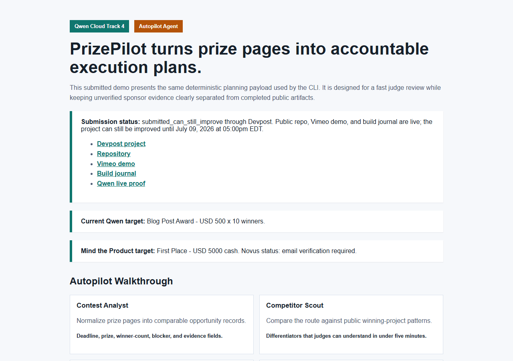
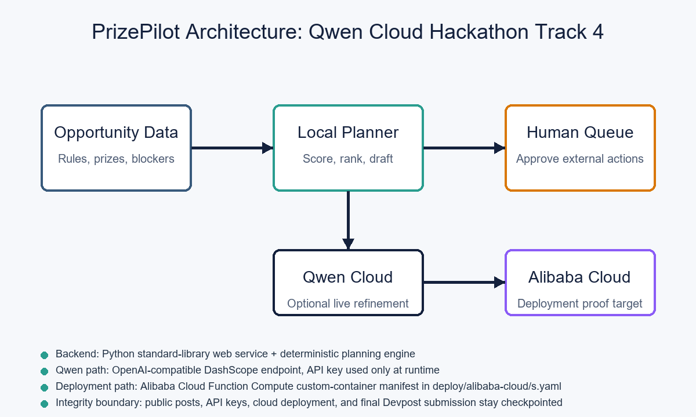

Blog Post Award reader path
This article is the judge-readable project story for the Qwen Blog Post Award path. The fastest review path is three steps: confirm the submitted Devpost project, watch the short public demo, and read this Blog Award story. The judge evidence pack, static judge demo, Qwen live proof, cloud readiness report, benchmark method, and public repository are the current deeper review links after that first pass.
The story is intentionally evidence-first. It highlights what PrizePilot has already proved publicly, what Qwen Cloud integration has now verified through a live smoke test, how the route ranking is scored in the benchmark method, and what remains account-gated until an Alibaba Cloud endpoint deployment is available.
Latest review status
As of June 15, 2026, PrizePilot is submitted on Devpost with a public GitHub repository, public Vimeo demo, this public Blog Award story, a static judge demo, and Qwen/DashScope live smoke proof. The current public review path is live now and avoids asking judges to open private accounts, API consoles, or unpublished proof links.
The current evidence boundary is intentionally explicit: live Qwen/DashScope refinement is verified, while a verified live Alibaba Cloud endpoint remains a prepared path, not a completed claim. The cloud readiness report verifies the request shape, live Qwen proof, Alibaba manifest, dashboard proof target, and claim boundary without using live secrets. The repository and this build journal are the source of truth for judges who want the latest status, validation report, and route ledger.
The problem
Online hackathons look like a fast path to income, but the useful decision is not simply which prize has the biggest headline number. The better question is which route is actually reachable with the time, account access, evidence requirements, and public actions available right now.
PrizePilot was built around that practical question. It reads structured opportunity data, ranks cash-prize routes, and turns the best route into a concrete execution plan. The agent is intentionally useful before the risky steps: account creation, API keys, public repositories, videos, blog posts, cloud deployment, payout setup, and final submission buttons.
Why this fits Track 4
Track 4 focuses on agents that automate real-world business workflows end to end while handling ambiguous inputs, external tools, and human-in-the-loop checkpoints. PrizePilot applies that pattern to hackathon execution, where the raw inputs are messy and the cost of a false claim is high.
The workflow asks and answers operational questions:
- Which prize route should be attempted first?
- Which prizes have multiple winners and practical eligibility?
- Which steps can be prepared offline without external side effects?
- Which steps require identity, account access, API keys, public publishing, or final approval?
- What proof needs to be captured before a claim appears in a Devpost submission?
Current planning behavior
The local deterministic planner ranks opportunities by prize value, number of winners, deadline pressure, and blockers. In the current sample portfolio, a near-deadline Splunk feedback route stays first because it is a multi-winner, low-friction prize. The Qwen Cloud route is the higher-upside project route and is now submitted publicly; the remaining improvement path is Alibaba Cloud endpoint proof and sharper Devpost copy based on the captured Qwen live evidence.
That distinction is the core of PrizePilot: it does not chase the largest pool if the evidence cannot be produced. It chooses the route that can be completed honestly.


Benchmark method
PrizePilot's benchmark is intentionally small and inspectable. It does not claim to predict winners statistically. It measures whether a route-selection agent can normalize real prize pages into comparable fields, weigh reachable value against execution friction, and keep public claims aligned with evidence.
The current sample portfolio covers feedback prizes, submitted Qwen project work, product-analytics gates, public PR bounties, and heavier cloud/hardware routes. The scorer caps raw prize amount, rewards multi-winner categories, rewards fast evidence-rich paths such as feedback and blog awards, and penalizes single-winner, public-PR, product-analytics, cloud-deployment, and non-cash routes when they add execution risk. Judges can inspect the full method in the benchmark method page and reproduce the output with the local CLI or the static plan JSON.
Claim, proof, and gap map
This table is the operating principle behind the submission. The project should only strengthen public claims after the proof exists.
| Claim | Current Proof | Remaining Gap |
|---|---|---|
| PrizePilot can rank cash-prize routes. | CLI, local web dashboard, portfolio sample data, screenshots, validation report, and the static judge demo. | None for local deterministic behavior. |
| The project is a submitted Qwen Track 4 entry. | Public Devpost page, Vimeo demo, public repository, and this build journal. | Improve evidence before judging if live sponsor tooling becomes available. |
| Qwen/DashScope can refine the planning narrative. | OpenAI-compatible client, runtime environment-variable handling, focused unit tests, the cloud readiness report, and a public Qwen live smoke proof page. | Future reruns still require official account/API access at action time, but the initial live proof is captured. |
| Alibaba Cloud deployment is prepared. | Function Compute manifest, deployment runbook, and cloud readiness report in the public repository. | A live endpoint requires official cloud account verification and billing/credit approval. |
Qwen Cloud integration plan
PrizePilot is Qwen-ready through an OpenAI-compatible DashScope client. The deterministic planner works locally so every recommendation can be audited. A live Qwen/DashScope smoke test has now shown that the same plan can be refined at runtime without storing the key.
Implemented locally
- Support for
DASHSCOPE_API_KEYandQWEN_API_KEYenvironment variables. - OpenAI-compatible
/chat/completionsrequest shape. - Configurable base URL and model.
- Safer error messages when no runtime API key is present.
payload = {
"model": self.model,
"messages": list(messages),
"temperature": 0.2,
}
POST {base_url}/chat/completions
Authorization: Bearer <runtime key only>Deployment story
The project includes a deployable standard-library web/API service and a Dockerfile. The dashboard exposes the same plan through a browser-readable page and a machine-readable /api/plan endpoint. The Alibaba Cloud deployment runbook lists the proof that should be captured once the cloud step is performed: public endpoint, screenshot, API response, and a repository link showing Alibaba Cloud service usage.
This keeps the Devpost submission aligned with the rules: the backend proof should be shown through actual deployment evidence, not by implying that local screenshots are enough.
What the demo shows
The demo starts with a portfolio containing several hackathon and bounty routes. PrizePilot ranks them and explains why a small multi-winner feedback prize can be the urgent first target while Qwen Cloud is the stronger second-wave project route.
Then the demo opens the Qwen project plan. The agent targets the Blog Post Award and Honorable Mention route instead of over-optimizing for a single-winner grand prize. It generates publication and approval checkpoints for Devpost updates, Qwen and Alibaba account work, public repository maintenance, video and blog publication, and deployment evidence.
The final section shows the dashboard and /api/plan output so both people and tools can inspect the decision. Judges who want a setup-free version can open the static judge demo.
Judging criteria map
| Criterion | How PrizePilot addresses it | Evidence |
|---|---|---|
| Innovation | Automates the under-served workflow of turning prize pages into accountable execution plans instead of only generating another app shell. | Route ranking, agent roles, approval queue, and public evidence ledger. |
| Technical depth | Combines deterministic planning, a Qwen-compatible client, local web/API surface, Docker packaging, and Alibaba deployment preparation. | Source code, tests, dashboard, API payload, Dockerfile, and Function Compute manifest. |
| Problem value | Makes real-money route selection safer by tracking deadlines, winner count, proof gaps, public action risk, payout risk, and KYC boundaries. | Live prize-route portfolio, submitted Splunk/Qwen routes, bounty PR monitoring records, and the benchmark method. |
| Presentation | Provides Devpost, video, repo, build journal, screenshots, and a setup-free judge demo. | Public links in the sidebar and the evidence hub. |
Next proof to capture
- Use the captured live Qwen Cloud refinement pass as public sponsor-model evidence.
- Deploy the web/API service on Alibaba Cloud and capture endpoint proof after account-owner approval.
- Update the submitted Devpost project only after the new live evidence exists.
- Refresh screenshots or demo assets if the dashboard changes materially.
The public build record is deliberately conservative. PrizePilot should move fast where preparation is reversible and slow down where the action becomes public, costly, or account-bound.